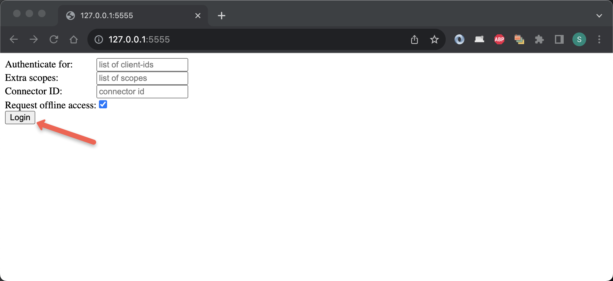
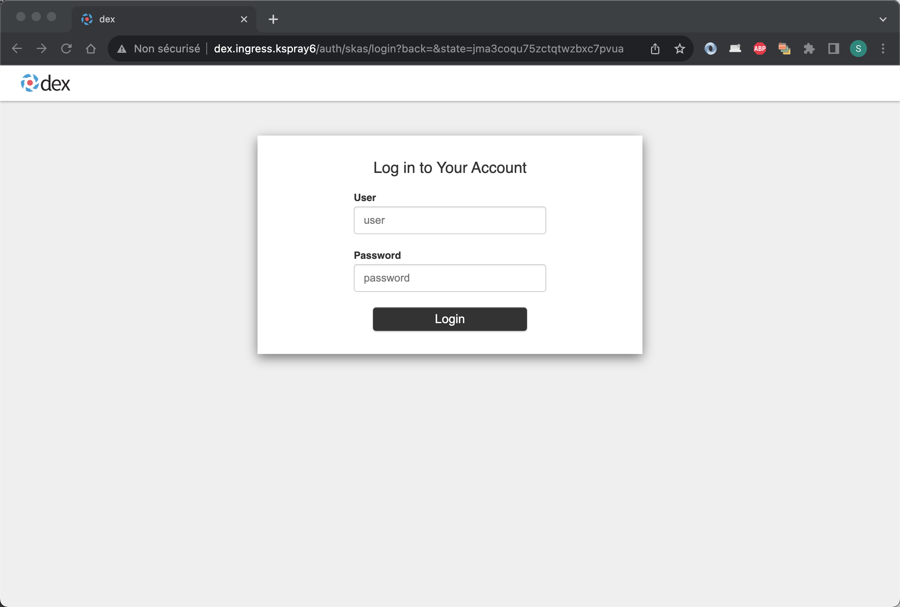
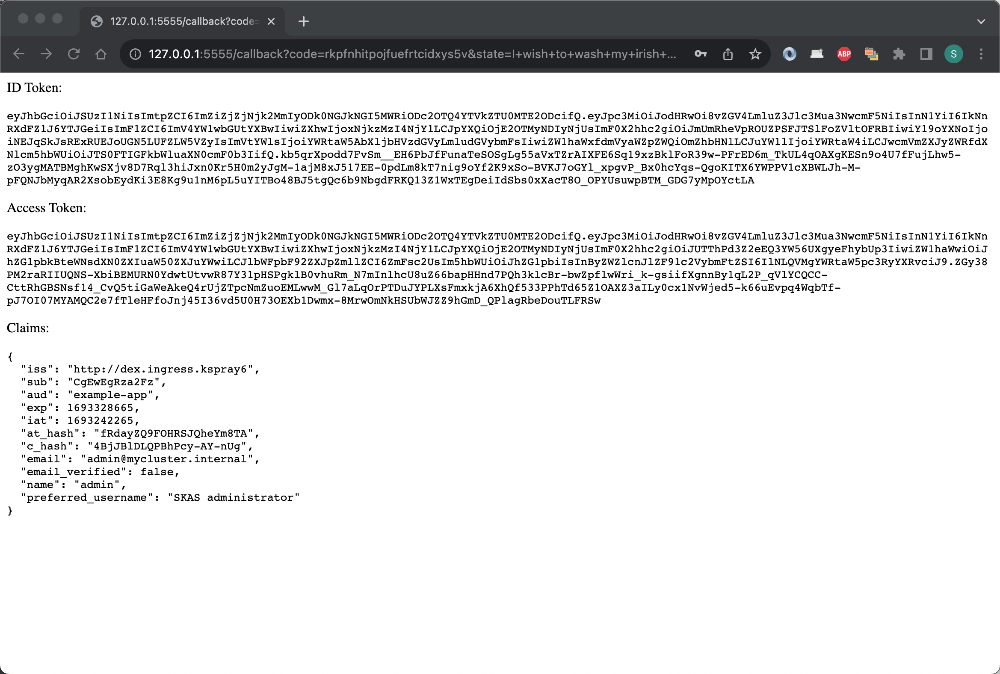

DEX integration
DEX is an OpenID Connect provider. As such, it will serve OpenID Connect clients to provide Single Sign-On services.
DEX does not host any user identity information by itself but relies on other Identity Providers for this through configurable connectors.
A connector has been developed for SKAS. As DEX does not provide an extension mechanism, adding a connector requires patching the code. So, a specific DEX image with a SKAS connector has been built.
Deploying DEX in standalone mode requires two operations:
- Reconfiguring SKAS to open a service for the usage of DEX (the
loginservice). - Deploying DEX itself with the proper connector configuration.
In the following, three variants of this configuration will be described. One with the connection in clear text, and two secured, with network encryption and inter-pod authentication.
Even if your target is a fully secured configuration, we suggest you first implement the unsecured, simplest variant, and then modify it incrementally, as described.
Clear text connection
SKAS reconfiguration
The login service is provided by the skAuth module in SKAS. By default, this service is disabled and must be
enabled to be used. You can find more information about SKAS modules and interfaces in the
Architecture/Modules and interface section.
Below is a sample values file that enables the login service:
Please note that by default, the skAuth module provides only SSL-encrypted services. This includes our login service.
To deploy this configuration:
helm -n skas-system upgrade -i skas skas/skas --values ./values.init.yaml --values ./values.skas.login.yaml
Don't forget to include the
values.init.yamlfile or merge it into thevalues.skas.yamlfile. Additionally, if you have other values files, make sure to include them in each upgrade.Also, remember to restart the pod(s) after making these configuration changes. You can find more information on how to do this in the Configuration: Pod restart section.
DEX deployment
For this example, we will use the official DEX Helm chart. However, this will require some configuration adjustments by providing a specific value file.
Here is such sample file (Please note that some values may need to be customized to match your specific context):
values.dex.yaml
image:
repository: ghcr.io/skasproject/dex
tag: v2.37.0-skas-0.2.1
config:
issuer: http://dex.ingress.mycluster.internal
storage:
type: kubernetes
config:
inCluster: true
web:
http: 0.0.0.0:5556
logger:
level: info
format: text
oauth2:
skipApprovalScreen: true
connectors:
- type: skas
id: skas
name: SKAS
config:
loginPrompt: "User"
loginProvider:
url: https://skas-auth.skas-system.svc
insecureSkipVerify: true
staticClients:
- id: example-app
redirectURIs:
- 'http://127.0.0.1:5555/callback'
name: 'Example App'
secret: ZXhhbXBsZS1hcHAtc2VjcmV0
securityContext:
allowPrivilegeEscalation: false
capabilities:
drop:
- ALL
readOnlyRootFilesystem: false
runAsNonRoot: true
runAsUser: 1000
seccompProfile:
type: RuntimeDefault
ingress:
enabled: true
className: nginx
hosts:
- host: dex.ingress.mycluster.internal
paths:
- path: /
pathType: ImplementationSpecific
backend:
service:
name: dex
port:
number: 5556
Here are some comments about this values file:
- The
imagesection is used to specify the SKAS patched image of DEX. - The
configsection represents the DEX configuration file. For a more detailed explanation, please refer to the sample DEX config file. - The
config.issuervalue needs to be adjusted according to your local domain name. Note that it is an unsecured URL. - The
config.connnectors[0]is the SKAS specific section. - The
config.connnectors[0].config.loginProvider.urlvalue points to theskAuthservice. As mentioned earlier, this service uses SSL encryption - The
config.connnectors[0].config.loginProvider.insecureSkipVerifyis set totrue. This is because the targeted service uses HTTPS, and we're skipping the certificate authority validation for this first sample. - the
staticClientssection defines a first OIDC client with parameters compatible with theexample-appdescribed below. - The
securityContextsection specifies some security constraints. This can be useful if your cluster enforces security restrictions on running PODs. - The
ingresssection should be adjusted, especially for thehost:URL, and possibly more if you're using an ingress controller other than nginx.
This will add the DEX Helm chart repository to your Helm configuration and update the list of available charts.
Now you can proceed to deploy DEX using Helm with the provided values file.
f everything is set up correctly, you should have two running Pods:
$ kubectl -n skas-system get pods
> NAME READY STATUS RESTARTS AGE
> dex-54b4698bcd-9wbz6 1/1 Running 0 5h5m
> skas-5cc75b8ff9-pw7nd 3/3 Running 0 6h23m
In case of problems, you may want to check the resulting configuration. Unfortunately, this Helm chart stores it in a secret. This means the configuration values are encoded in base64.
To display it, you can use the following command:
If you modify some value in the values.skas.login.yaml file, execute again the Helm deployment command and
restart the DEX Pod:
helm -n skas-system upgrade -i dex dex/dex --values ./values.dex.yaml
kubectl -n skas-system rollout restart deployment dex
Testing
By convention, all OIDC providers must provide a well-known endpoint that describes their other endpoints and
configuration values.
You can test this endpoint with the following command:
$ curl http://dex.ingress.mycluster.internal/.well-known/openid-configuration
> {
> "issuer": "http://dex.ingress.mycluster.internal",
> "authorization_endpoint": "http://dex.ingress.mycluster.internal/auth",
> "token_endpoint": "http://dex.ingress.mycluster.internal/token",
> "jwks_uri": "http://dex.ingress.mycluster.internal/keys",
> ....
Of course, you must adjust the URL to match your specific context
Running the provided command will help ensure that DEX is up and running and that your ingress configuration is functional.
To delve deeper, DEX provides a raw example-app. The primary objective of this application is to offer a starting point for developers to integrate an OIDC client into their code. However, it also provides an interactive tool for testing an OIDC service.
For your convenience, we have set up a repository to host binaries of this application for various operating systems and processors.
For instance, to download and install this binary on a Mac Intel:
cd /tmp
curl -L https://github.com/skasproject/dex-example-app/releases/download/2.37.0/example-app_2.37.0_darwin_amd64 -o ./example-app
sudo chmod 755 example-app
sudo mv example-app /usr/local/bin
Then, you can launch it with the DEX issuer URL:
$ example-app --issuer http://dex.ingress.mycluster.internal
> 2023/08/28 18:50:07 listening on http://127.0.0.1:5555
Now, launch your browser and navigate to the provided link (http://127.0.0.1:5555). You should land on a page like this:

Click on the Login button. You should then be directed to a login page:

Enter the credentials of a valid SKAS user account (e.g., 'admin'), and you should be directed to a page like this:

This is not really 'user-friendly', but it is a test application.
You can take a look at the logs for both SKAS and DEX.
You can also test an invalid login.
To ensure this works correctly, you must maintain the configuration of
staticClientsin the DEX config file intact.
The DEX GitHub repo also provides the example-app as a container. You can launch it using the following command:"
$ docker run -p 5555:5555 ghcr.io/dexidp/example-app:latest example-app --issuer http://dex.ingress.mycluster.internal --listen http://0.0.0.0:5555
> 2023/08/28 17:29:04 listening on http://0.0.0.0:5555
Securing connection
The previous configuration has a significant security issue: The login and password information are transmitted over an unencrypted connection.
The following configuration aims to address this vulnerability by implementing secure communication between user's browser and DEX. It also add authentication from DEX to SKAS. Additionally, it verifies the authenticity of the SKAS certificate."
SKAS reconfiguration
The following is the modified values file for SKAS reconfiguration:
values.skas.login.yaml
The service authentication has been activated.
To deploy this configuration, use the same command as previously:
helm -n skas-system upgrade -i skas skas/skas --values ./values.init.yaml --values ./values.skas.login.yaml
Don't forget to include the
values.init.yamlfile or merge it into thevalues.skas.yamlfile. Additionally, if you have other values files, make sure to include them in each upgrade.Also, remember to restart the pod(s) after making these configuration changes. You can find more information on how to do this in the Configuration: Pod restart section.
DEX deployment
And here is the modified values file for DEX deployment
values.dex.yaml
image:
repository: ghcr.io/skasproject/dex
tag: v2.37.0-skas-0.2.1
config:
issuer: https://dex.ingress.mycluster.internal
storage:
type: kubernetes
config:
inCluster: true
web:
http: 0.0.0.0:5556
logger:
level: info
format: text
oauth2:
skipApprovalScreen: true
connectors:
- type: skas
id: skas
name: SKAS
config:
loginPrompt: "User"
loginProvider:
url: https://skas-auth.skas-system.svc
rootCaPath: ""
rootCaData: "LS0tLS1CRUdJTiBDRVJU.......................ENFUlRJRklDQVRFLS0tLS0K"
insecureSkipVerify: false
clientAuth:
id: "dex"
secret: "aSharedSecret"
staticClients:
- id: example-app
redirectURIs:
- 'http://127.0.0.1:5555/callback'
name: 'Example App'
secret: ZXhhbXBsZS1hcHAtc2VjcmV0
securityContext:
allowPrivilegeEscalation: false
capabilities:
drop:
- ALL
readOnlyRootFilesystem: false
runAsNonRoot: true
runAsUser: 1000
seccompProfile:
type: RuntimeDefault
ingress:
enabled: true
className: nginx
annotations:
cert-manager.io/cluster-issuer: your-cluster-issuer
nginx.ingress.kubernetes.io/force-ssl-redirect: "true"
hosts:
- host: dex.ingress.mycluster.internal
paths:
- path: /
pathType: ImplementationSpecific
tls:
- secretName: dex-server-tls
hosts:
- dex.ingress.kspray6
The modification are the following:
- The
config.issuerendpoint now uses HTTPS. - The
config.connectors[0].config.loginProvider.rootCaDatais populated with the Certificate Authority of theskAuthservice. To obtain its value, you can extract it from the service's certificate as follows: - The
config.connectors[0].config.loginProvider.clientAuthis configured to authenticate using the ID/secret defined earlier for theskAuthlogin service. - The
ingressis now configured to handle SSL connections and enforce SSL for non-SSL connections.-
To apply this new configuration, use the same command as before.
And restart the DEX POD:
Another security enhancement involves configuring the ingress for SSL passthrough and enabling SSL for the DEX Pod itself. This would ensure end-to-end encryption. However, please note that achieving this configuration with the current DEX Helm Chart is not feasible, and refactoring it is beyond the scope of this documentation."
Testing
You can test again the DEX well-known endpoint with the following command. Note the https:// now on URLs
You can test the DEX well-known endpoint again using the following command.
$ curl https://dex.ingress.mycluster.internal/.well-known/openid-configuration
> {
> "issuer": "https://dex.ingress.mycluster.internal",
> "authorization_endpoint": "https://dex.ingress.mycluster.internal/auth",
> "token_endpoint": "https://dex.ingress.mycluster.internal/token",
> "jwks_uri": "https://dex.ingress.mycluster.internal/keys",
> "userinfo_endpoint": "https://dex.ingress.mycluster.internal/userinfo",
> ....
Please note the change to https:// in the URLs."
Use the example-app application again, but this time note the 'https://' in the issuer.
$ example-app --issuer https://dex.ingress.mycluster.internal
> 2023/08/28 18:50:07 listening on http://127.0.0.1:5555
Encountering a certificate issue?
You might see the following error on the curl request:
$ curl https://dex.ingress.mycluster.internal/.well-known/openid-configuration
> curl: (60) SSL certificate problem: unable to get local issuer certificate
> More details here: https://curl.haxx.se/docs/sslcerts.html
> ....
This issue occurs when the DEX issuer's certificate is signed by an authority that your workstation don't recognize.
To resolve this, you need to retrieve the issuer's certificate:
kubectl -n skas-system get secret dex-server-tls -o=jsonpath='{.data.ca\.crt}' | base64 -d >./CA.crt
And to provide it to the Curl command:
$ curl https://dex.ingress.mycluster.internal/.well-known/openid-configuration \
--cacert ./CA.crt
> {
> "issuer": "https://dex.ingress.mycluster.internal",
> "authorization_endpoint": "https://dex.ingress.mycluster.internal/auth",
> "token_endpoint": "https://dex.ingress.mycluster.internal/token",
> "jwks_uri": "https://dex.ingress.mycluster.internal/keys",
> "userinfo_endpoint": "https://dex.ingress.mycluster.internal/userinfo",
> ....
You may encounter the same issue with the example-app test application. In this case, also provide the certificate:
$ example-app --issuer https://dex.ingress.kspray6 --issuer-root-ca ./CA.crt
> 2023/08/29 09:31:53 listening on http://127.0.0.1:5555
Using a Kubernetes secret
There is still a security issue as two shared secrets (aSharedSecret and the staticClients secret) are stored in plain text in both values files. As a result, they could potentially end up in a version control system.
So, let's store these values in Kubernetes secrets and access them using environment variables.
Here is a secret intended to be shared between DEX and SKAS. Its value can be randomly generated, as it is accessed by both parties.
dex-client-secret.yaml
There are several solutions to generate such a secret value. One can use Helm with some random generator function or use a Secret generator."
Here is the secret shared between DEX (in config.staticClients[0]) and the example-app application binary."
example-app-secret.yaml
Its value is hard-coded in
example-app, so it must not be changed (or you must pass the new value as the--client-secret parameteron launch).Note that both secrets are formatted in a way that is compatible with
spec.containers[X].envFrom. This is required by the DEX Helm chart.
SKAS reconfiguration
Here is the modified values file for the SKAS reconfiguration:
values.skas.login.yaml
The modifications are the following:
- The
skAuth.extraEnvsubsection injects the secret value as an environment variable in the container. TheskAuth.exposure.external.services.identity.clients[0].secretfetches its value through this environment variable.
Most of the values provided by the Helm chart end up inside a
configMap, which is then loaded by the SKAS executable. The environment variable interpolation occurs during this load.
DEX deployment
Here is the modified values file for DEX deployment:
values.dex.yaml
image:
repository: ghcr.io/skasproject/dex
tag: v2.37.0-skas-0.2.1
config:
issuer: https://dex.ingress.mycluster.internal
storage:
type: kubernetes
config:
inCluster: true
web:
http: 0.0.0.0:5556
logger:
level: info
format: text
oauth2:
skipApprovalScreen: true
connectors:
- type: skas
id: skas
name: SKAS
config:
loginPrompt: "User"
loginProvider:
url: https://skas-auth.skas-system.svc
rootCaPath: ""
rootCaData: "LS0tLS1CRUdJTiBDRVJUSUZJQ0FURS0tLS0tCk1JSUdTekNDQkRPZ0F3SUJBZ0lKQU4zclBySE5JRmZBTUEwR0NTcUdTSWIzRFFFQkN3VUFNSFV4Q3pBSkJnTlYKQkFZVEFrWlNNUTR3REFZRFZRUUlEQVZRWVhKcGN6RU9NQXdHQTFVRUJ3d0ZVR0Z5YVhNeEdUQVhCZ05WQkFvTQpFRTl3Wlc1RVlYUmhVR3hoZEdadmNtMHhGakFVQmdOVkJBc01EVWxVSUVSbGNHRnlkRzFsYm5ReEV6QVJCZ05WCkJBTU1DbU5oTG05a2NDNWpiMjB3SGhjTk1qRXdPREU0TURreU16QTFXaGNOTXpFd09ERTJNRGt5TXpBMVdqQjEKTVFzd0NRWURWUVFHRXdKR1VqRU9NQXdHQTFVRUNBd0ZVR0Z5YVhNeERqQU1CZ05WQkFjTUJWQmhjbWx6TVJrdwpGd1lEVlFRS0RCQlBjR1Z1UkdGMFlWQnNZWFJtYjNKdE1SWXdGQVlEVlFRTERBMUpWQ0JFWlhCaGNuUnRaVzUwCk1STXdFUVlEVlFRRERBcGpZUzV2WkhBdVkyOXRNSUlDSWpBTkJna3Foa2lHOXcwQkFRRUZBQU9DQWc4QU1JSUMKQ2dLQ0FnRUE2cFBqejVCb1FYczZ2NE02NHBwc1JvTEFBeHMxQmovRmJGZTBzVzIycG9XL1d0L1NHSWVVVTdCUgpmZUhJOUdNbE53WmlkSXV0ZEU5d0N1a2pIbVVLbVhmRUx4MXlhamdTSm5PSmR1cWdCZHBHNTVwLzhtQ2lubVk2Cm1Pdis2V0hGMHFIYjVEZjZTTHhpSFNkTEZQVWtwV3IrbmI2T0JxaERsZ2JNUjA5WVZwV1ZHTlFqalQvSWdhbmIKRG12S1Z2S0VXTEk2cGZGVDhxWW5rTnNxamQ3T1NiZGdaVlRPTGh4YVJIZ2xVUlc3dGNvaXIyYW8rWFRNSkJaVAo4elRmS1BOVmcwK3c5ODBmVVY0dCtSZElFdXREbTdFa1JCcXBXNkZtZktFOFlhb2thWHJxMjgrVUFWSFpMd1BxCk1jVnFTeVNzaVR0bTBSYXhjcG9aYUQ5SjdWWlB1UGxlOUluUE1sNTJYaE1pZHBlNG9SYW1JRjJlUnNOZExkVTYKQklPcTBtNHRaTkk1QnRwbXBTZVlMOXBBMmtGL3UwT2Z1VWNUbVZTSlBGMkMybVJETVpmMVMxVFVGYnVIK1N2ZgoraTQ4bFVoSjIvajlURVkxRk1DM0oxMkVBUXk0YXpBa0FXWkdKUDBBdzBpdFBjUkJVMkJ0ZXV1VWhhQlNWTU9JCkxxSGFhTXRhZzJCUXcwblBhTDhabFNRcVJyakF0NnRaUDhqTnNpRFBxSE9SOVFDb29EbGZoWUJ5T3l2Ry9FWHEKWXpVUUV3NXF2NkdiSzJLYWs5U0s0ckhqRGF6V1l3a0Mza1grbkxiREFmcUNMNkhpWUMyL0ZiQzVwVmlyM0o5RwppM0JIVFBTRk9rQ2t3QkJMNGE4ZWxDRWRmajEvTlRxNDYzNzRiQU1jSHcvV2dqdzhCT0VDQXdFQUFhT0IzVENCCjJqQVBCZ05WSFJNQkFmOEVCVEFEQVFIL01CMEdBMVVkRGdRV0JCUk90dmNMS0E4UFhOUGs1bmRFL0Y5SldKb3gKbWpDQnB3WURWUjBqQklHZk1JR2NnQlJPdHZjTEtBOFBYTlBrNW5kRS9GOUpXSm94bXFGNXBIY3dkVEVMTUFrRwpBMVVFQmhNQ1JsSXhEakFNQmdOVkJBZ01CVkJoY21sek1RNHdEQVlEVlFRSERBVlFZWEpwY3pFWk1CY0dBMVVFCkNnd1FUM0JsYmtSaGRHRlFiR0YwWm05eWJURVdNQlFHQTFVRUN3d05TVlFnUkdWd1lYSjBiV1Z1ZERFVE1CRUcKQTFVRUF3d0tZMkV1YjJSd0xtTnZiWUlKQU4zclBySE5JRmZBTUEwR0NTcUdTSWIzRFFFQkN3VUFBNElDQVFESgpxZGI3Myt4cWFqclNuaHoxOTlWZGR3RUVvWGVSTi9jbkY0ZUdQODk0dURBSCtvcWYvVDNhUExZaWxHdnVoZElwCmUrUFk4Z2dsdUJRa3hzd1pDQjFzSFNGUFVHOFZPWmNQVU1SZGV1TVVqTUczcEhRT3J4N2VMV1hYRXNnblJ3MTcKcjIvei92L3VVVmovaW15Z0cwQWRkV0t2Y2ZEZ3AwcHNlUFRMY0xaRkdURU1nN3Y2RWswWFRLMXlEdlhzWmliUQpWcTdVMEE1SE5nNm40SzByNFBycTNQTTdCZWVpQnpkY21yaDR4MkIzcXkvWDY3SXF5K2pTMFZZS2NmVFkwQ25FClR1KzE5cjJlSGY0ZGM4VXIzbzJSamptQUJ5cHBHYVQ0RDdkZ0g0a0hkeDJoN2NmMWhTeVozU3lMang4VkZFdzIKbmhFVjcrUVBXM2g1RExDaXMwelcyY2pyRFhKblIxT3dpR3NqWmgyWUZlMytiUUNiQU5sV0F0dVNaZTg0ZkVlLwpJeHRqLzhBMlAvd0thaitWeGIrWFZKd3l0YzJJbUhYUTdMcjZ6MlMzcFJUTmcyREQ3V2d2WkZvVk5WWkllR0xaCmJDYkVjdmpPQkdDSU1DK0tyV0dMYlQzaTFlMUxpY2k5MWFxWGNIcDlyRVpTbE8va1BHZjVnWDZGSmNqNmpWbzcKUDZLQ2xCbUloVllITXVlb3JIN09VRmw4bWRzVmF5eE1COGR6bHI0OXlRUXpocWlmM3l3TEpRRXBDbENzYnEvZApKMkQ5M0JUQTh6NWN0bzRJNW9DdGZRMkdqbGtmRUpHODYzZ2NJVC8zaWV1M0FJLytMQVRGTzcrVFlWcVlZOFNJCndEUVZ4czF3T3BIWk9FZWtmTzRmS1cxMkJRK2YrSzltK2owSVNGelVDQT09Ci0tLS0tRU5EIENFUlRJRklDQVRFLS0tLS0K"
insecureSkipVerify: false
clientAuth:
id: "dex"
secret: ${DEX_CLIENT_SECRET}
staticClients:
- id: example-app
redirectURIs:
- 'http://127.0.0.1:5555/callback'
name: 'Example App'
secretEnv: EXAMPLE_APP_SECRET
envFrom:
- secretRef:
name: dex-client-secret
- secretRef:
name: example-app-secret
securityContext:
allowPrivilegeEscalation: false
capabilities:
drop:
- ALL
readOnlyRootFilesystem: false
runAsNonRoot: true
runAsUser: 1000
seccompProfile:
type: RuntimeDefault
ingress:
enabled: true
className: nginx
annotations:
cert-manager.io/cluster-issuer: your-cluster-issuer
nginx.ingress.kubernetes.io/force-ssl-redirect: "true"
hosts:
- host: dex.ingress.kspray6
paths:
- path: /
pathType: ImplementationSpecific
tls:
- secretName: dex-server-tls
hosts:
- dex.ingress.mycluster.internal
DEX handles environment variable expansion in two different ways, depending on the subsection:
- Environment variables are expanded in the usual way within the
connectorsdefinition. - However, in other parts of the configuration, such as
staticClients, standard environment variable expansion does not occur. To address this, two new attributes have been introduced in thestaticClientsdefinition:idEnvandsecretEnv. They take the variable name as parameter. In our case, only thesecretEnvattribute is used.
Both secret values are injected into the Pod using the envFrom subsection."